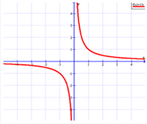

دالة المقلوب
الدالة الرئيسة (الأم): (f(x) = 1\(x
شكل التمثيل البياني : قطع زائد
المجال : جميع الأعداد الحقيقة ماعدا الصفر.
المدي : جميع الأعداد الحقيقة ماعدا الصفر.
خطا التقارب : x=0 & y=0
- خط التقارب لدالة : هو مستقيم يقترب منه التمثيل البياني للدالة.
- ولدالة المقلوب تقارب رأسي عند القيمة المستثناة من مجالها، وخط تقارب أفقي يبين سلوك طرفي التمثيل البيان للدالة.
تكون الدالة غير معرفة عندما : x = 0
